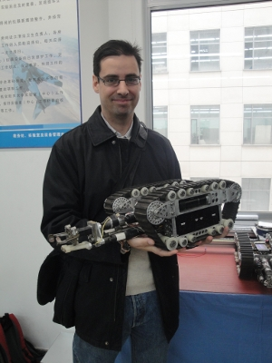
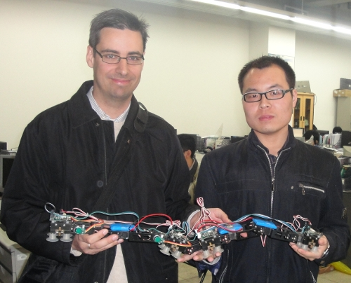
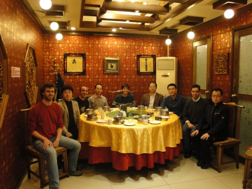

La semana del 23 al 30 de Abril de 2010 hicimos una
visita al Instituto de Robótica de la Universidad de Beihang en Pekín
dentro del proyecto “Nuevos circuitos generadores centrales de patrones bio-inspirados
para el control de robots modulares“. El viaje se financió gracias a la
1ª convocatoria de ayudas para proyectos de cooperación interuniversitaria UAM-Santander con Asia.
Así que el viernes 23 de Abril, Pablo Varona, Francisco de Borja, Fernando Herrero Carrón y yo tomamos el avión rumbo a Pekín.

La Universidad de Beihang es enorme. En el insitituto de Robótica pudimos ver los últimos robots en los que están trabajando. Entre ellos, tuve la ocasión de estar en vivo y en directo junto al robot modular JL-I, que tantas veces había visto en los artículos y vídeos.

Otros robots impresionantes que tuvimos la ocasión de ver fueron los peces robóticos, el robot esfera y la oruga trepadora que usa el ventosas pasivas para subir por paredes verticales. En la foto estoy junto a Kun Wang, el estudiante de doctorado que la está desarrollando.
Pero no todo fueron robots. Aprovechamos también para conocer Pekín y visitar los sitios más emblemáticos como la ciudad prohibida, la villa olímpica, y la gran muralla China.

En esta foto, tomada en la cena de despedida, estamos todos los investigadores. De izquierda a derecha: Fernando Herrero-Carrón,Yueri Cai, Francisco de Borja, Wei Wang, Pablo Varona, Bi Shusheng, Houxiang zhang, Juan González y Kun Wang.
La semana que pasamos en Pekín fue alucinante. En mi caso particular, fue una experiencia muy enriquecedora y de la que aprendí muchísimas cosas, tanto culturales como profesionales. Muchas gracias a Pablo Varona por invitarme a participar en este proyecto.
I have already read this page. but only photos. haha
Hi Kun!!
hahaha 😀 I really like your climbing caterpillar. It is a very very good work!